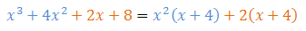
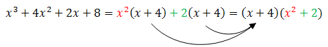

Do rozkładania wielomianów na iloczyn czynników
najczęściej stosujemy takie metody jak:
- wyciąganie wspólnego czynnika przed nawias,
- wzory skróconego mnożenia,
- deltę (\(\Delta \)),
- grupowanie wyrazów.
Metoda wyciągania wspólnego czynnika przed nawias
Przed nawias możemy wyciągać zarówno liczbę jak i literkę, która występuje w
każdym z
jednomianów tworzących wielomian.
Rozkładając wielomian na czynniki zawsze zaczynamy od sprawdzenia, czy nie da się
wyciągnąć wspólnego czynnika przed nawias ze wszystkich jednomianów.
Metoda wyciągania
wspólnego czynnika przed nawias została zilustrowana na poniższych przykładach.
Rozłóż wielomian \(W(x) = x^2 - 7x\) na czynniki.
Wspólnym
czynnikiem każdego z dwóch jednomianów tworzących ten wielomian jest \(x\).
Wyciągamy go
przed nawias: \[W(x) = x^2 - 7x = x(x - 7)\]
Rozłóż wielomian \(W(x) = 7x^3 + 21x\) na czynniki.
Wspólnym
czynnikiem każdego z dwóch jednomianów tworzących ten wielomian jest \(7x\).
Wyciągamy go
przed nawias: \[W(x) = 7x^3 + 21x = 7x(x^2 + 3)\]
Rozłóż wielomian \(W(x) = 4x^3 + 6x^2\) na czynniki.
Wspólnym
czynnikiem każdego z dwóch jednomianów tworzących ten wielomian jest \(2x^2\).
Wyciągamy
go przed nawias: \[W(x) = 4x^3 + 6x^2 = 2x^2(2x + 3)\] Uwaga! Jeżeli chcemy upewnić się,
że dobrze wyciągnęliśmy wspólny czynnik przed nawias, to wystarczy, że wymnożymy czynniki, np.:
\[W(x) = 2x^2(2x + 3) = 2x^2 \cdot 2x + 2x^2 \cdot 3 = 4x^3 + 6x^2\]
Rozłóż wielomian \(W(x) = 9x^3 - 3x^2 + 18x\) na czynniki.
Wspólnym czynnikiem każdego z trzech jednomianów tworzących ten wielomian jest \(3x\).
Wyciągamy go przed nawias: \[W(x) = 9x^3 - 3x^2 + 18x = 3x(3x^2 - x + 6)\]
Rozłóż wielomian \(W(x) = 10x^5 - 2x^4 + 4x^3 + 12x^2\) na czynniki.
Wspólnym czynnikiem każdego z czterech jednomianów tworzących ten wielomian jest
\(2x^2\).
Wyciągamy go przed nawias: \[W(x) = 10x^5 - 2x^4 + 4x^3 + 12x^2= 2x^2(5x^3 - x^2
+ 2x + 6)\]
Metoda wzorów skróconego mnożenia
Wzory skróconego mnożenia zostały dokładnie omówione w
tym miejscu.
Podczas rozkładania wielomianów na
czynniki najczęściej wykorzystujemy wzór: \[a^2-b^2=(a-b)(a+b)\] Dla przypomnienia wypiszmy i
ponumerujmy najczęściej stosowane wzory skróconego mnożenia: \[\begin{split} (1)\qquad
&(a+b)^2=a^2+2ab+b^2\\[6pt] (2)\qquad &(a-b)^2=a^2-2ab+b^2\\[6pt] (3)\qquad
&a^2-b^2=(a-b)(a+b)\\[6pt] (4)\qquad &a^3-b^3=(a-b)(a^2+ab+b^2)\\[6pt] (5)\qquad
&a^3+b^3=(a+b)(a^2-ab+b^2)\\[6pt] (6)\qquad &(a+b)^3=a^3+3a^2b+3ab^2+b^3\\[6pt] (7)\qquad
&(a-b)^3=a^3-3a^2b+3ab^2-b^3 \end{split}\]
Rozłóż wielomian \(W(x) = x^2 - 9\) na czynniki stosując wzory skróconego mnożenia.
Stosujemy wzór \((3)\): \[W(x) = x^2 - 9 = (x - 3)(x + 3)\]
Rozłóż wielomian \(W(x) = x^2 - 36\) na czynniki stosując wzory skróconego
mnożenia.
Stosujemy wzór \((3)\): \[W(x) = x^2 - 36 = (x - 6)(x + 6)\]
Rozłóż na czynniki wielomian \(W(x) = x^2 + 6x + 9\).
Stosujemy
wzór \((1)\): \[W(x) = x^2 + 6x + 9 = (x + 3)^2\]
Rozłóż na czynniki wielomian \(W(x) = x^2 - 10x + 25\).
Stosujemy
wzór \((2)\): \[W(x) = x^2 - 10x + 25 = (x - 5)^2\]
Rozłóż na czynniki wielomian \(W(x) = x^3 - 27\).
Stosujemy wzór
\((4)\): \[W(x) = x^3 - 27 = (x - 3)(x^2 + 3x + 9)\]
Rozłóż na czynniki wielomian \(W(x) = x^3 - 16x\).
W tym
przykładzie możemy wyciągnąć wspólny czynnik przed nawias, więc zaczynamy od wykonania tego
kroku: \[W(x) = x^3 - 16x = x(x^2 - 16)\] Teraz do wyrażenia w nawiasie stosujemy wzór \((3)\):
\[W(x) = x(x^2 - 16) = x(x - 4)(x + 4)\]
Rozłóż na czynniki wielomian \(W(x) = 4x^4 - 36x^2\).
W tym
przykładzie możemy wyciągnąć wspólny czynnik przed nawias, więc zaczynamy od wykonania tego
kroku: \[W(x) = 4x^4 - 36x^2 = 4x^2(x^2 - 9)\] Teraz do wyrażenia w nawiasie stosujemy wzór
\((3)\): \[W(x) = 4x^2(x^2 - 9) = 4x^2(x - 3)(x + 3)\]
Metoda delty
Metodę delty stosujemy do rozkładania na czynniki wyrażeń drugiego stopnia. W
prostych przypadkach można posługiwać się wzorami skróconego mnożenia, np.: \[x^2 - 4 = (x - 2)(x +
2)\] W bardziej złożonych przykładach, np.: \(x^2 - x - 6\), ciężko jest zastosować wzory skróconego
mnożenia i wtedy stosujemy metodę delty.
Metoda delty - to zamiana postaci
ogólnej wyrażenia kwadratowego na postać iloczynową. Zagadnienie to zostało omówione w dziale o
postaciach funkcji
kwadratowej.
Przypomnijmy jak robimy taką zamianę.
Załóżmy, że mam do
rozłożenia na czynniki następujący wielomian drugiego stopnia: \[W(x)=ax^2+bx+c\] Na początku
liczymy deltę korzystając ze wzoru: \[\Delta =b^2-4ac\] Mogą zajść trzy przypadki:
- Jeżeli delta wyszła mniejsza od zera, to rozkład na czynniki nie istnieje.
- Jeżeli delta wyszła większa od zera, to istnieją miejsca zerowe wielomianu i możemy je
obliczyć korzystając ze wzorów: \[\begin{split}{x}_{1}&=\frac{-b-\sqrt{\Delta
}}{2a}\\{x}_{2}&=\frac{-b+\sqrt{\Delta }}{2a}\end{split}\] Postać iloczynowa wygląda wówczas
tak: \[W(x)=a(x-x_1)(x-x_2)\]
- Jeżeli delta wyszła równa zero, to istnieje jedno miejsce zerowe i możemy je obliczyć ze
wzoru: \[x_1=\frac{-b}{2a}\] Postać iloczynowa wielomianu wygląda wówczas tak:
\[W(x)=a(x-x_1)^2\]
Rozłóż na czynniki wielomian \(W(x) = x^2 - x - 6\).
Zacznijmy od
wypisania współczynników \(a\), \(b\), \(c\):
\[\begin{split}&a =
1\\[6pt] &b = -1\\[6pt] &c = -6\end{split}\]
Teraz liczymy deltę: \[\Delta = (-1)^2 -
4\cdot 1\cdot (-6) = 1 + 24 = 25\] Delta wyszła większa od zera, zatem mamy dwa miejsca zerowe:
\[\begin{split} x_1=\frac{-b-\sqrt{\Delta }}{2a}=\frac{1-5}{2}=-2\\[6pt]
x_2=\frac{-b+\sqrt{\Delta }}{2a}=\frac{1+5}{2}=3 \end{split}\] Zapisujemy postać iloczynową:
\[W(x) = 1\cdot (x - 3)(x - (-2)) = (x - 3)(x + 2)\]
Metoda grupowania wyrazów
Metodę grupowania wyrazów stosujemy najczęściej do rozkładania na czynniki
wielomianów stopnia czwartego oraz wyższych.
Można powiedzieć, że jest to rozszerzenie
metody wyciągania wspólnego czynnika przed
nawias.
Jeżeli np. we wzorze wielomianu występują \(4\) wyrazy, to możemy wyciągnąć
przed nawias wspólny czynnik tylko z pierwszych dwóch wyrazów, a następnie wspólny czynnik z wyrazu
trzeciego i czwartego. Spójrzmy na poniższy przykład:
 W tym przykładzie zgrupowaliśmy pierwszy wyraz z drugim, a
trzeci z czwartym. Następnie w ramach każdej grupy wyciągnęliśmy wspólny czynnik przed nawias.
Z pierwszych dwóch wyrazów wyciągnęliśmy przed nawias wspólny czynnik \(x^2\), a z ostatnich dwóch
wyrazów wyciągnęliśmy przed nawias liczbę \(2\). Tak się szczęśliwie złożyło, że w obu nawiasach
pojawiło się to samo wyrażenie \(x + 4\). Dzięki temu można teraz wyciągnąć cały taki nawias przed
nawias:
 W ten sposób rozłożyliśmy wielomian trzeciego
stopnia na iloczyn czynników (nawiasu \((x^2 + 2)\) nie da się już bardziej rozłożyć, choćby
dlatego, że delta dla niego wychodzi ujemna).
Rozłóż na czynniki wielomian \(W(x) = 5x^3 + 10x^2 + 2x + 4\).
Grupujemy pierwszy wyraz z drugim, a trzeci z czwartym: \[\begin{split} W(x) &= 5x^3 + 10x^2 +
2x + 4 =\\[6pt] &=5x^2(x + 2) + 2(x + 2) = \\[6pt] &=(x + 2)(5x^2 + 2)\end{split}\] Z pierwszych
dwóch wyrazów wyciągnęliśmy przed nawias wspólny czynnik \(5x^2\).
Z ostatnich dwóch
wyrazów wyciągnęliśmy przed nawias liczbę \(2\).
W obu nawiasach otrzymaliśmy to samo
wyrażenie \((x + 2)\), które następnie wyciągnęliśmy przed nawias. Ostatecznie otrzymaliśmy
postać iloczynową wielomianu: \[W(x) = (x + 2)(5x^2 + 2)\] Uwaga! Należy jeszcze upewnić się,
czy drugiego nawiasu nie da się rozłożyć na czynniki \(1\)-szego stopnia. Liczymy w tym celu
deltę: \[\Delta = 0^2 - 4\cdot 5\cdot 2 = -40 \lt 0\] Delta wyszła ujemna, czyli nie istnieje
rozkład nawiasu \((5x^2 + 2)\) na czynniki pierwszego stopnia.
Rozłóż na czynniki wielomian \(W(x) = x^3 + 2x^2 - 9x - 18\).
Grupujemy pierwszy wyraz z drugim, a trzeci z czwartym: \[\begin{split} W(x) &= x^3 + 2x^2 - 9x
- 18 =\\[6pt] &=x^2(x + 2) - 9(x + 2) =\\[6pt] &= (x + 2)(x^2 - 9) = \\[6pt] &=(x + 2)(x - 3)(x
+ 3) \end{split}\] W tym przykładzie drugi nawias można było rozłożyć na iloczyn czynników
liniowych stosując wzór skróconego mnożenia. Ostatecznie otrzymaliśmy postać iloczynową
wielomianu: \[W(x) = (x + 2)(x - 3)(x + 3)\]